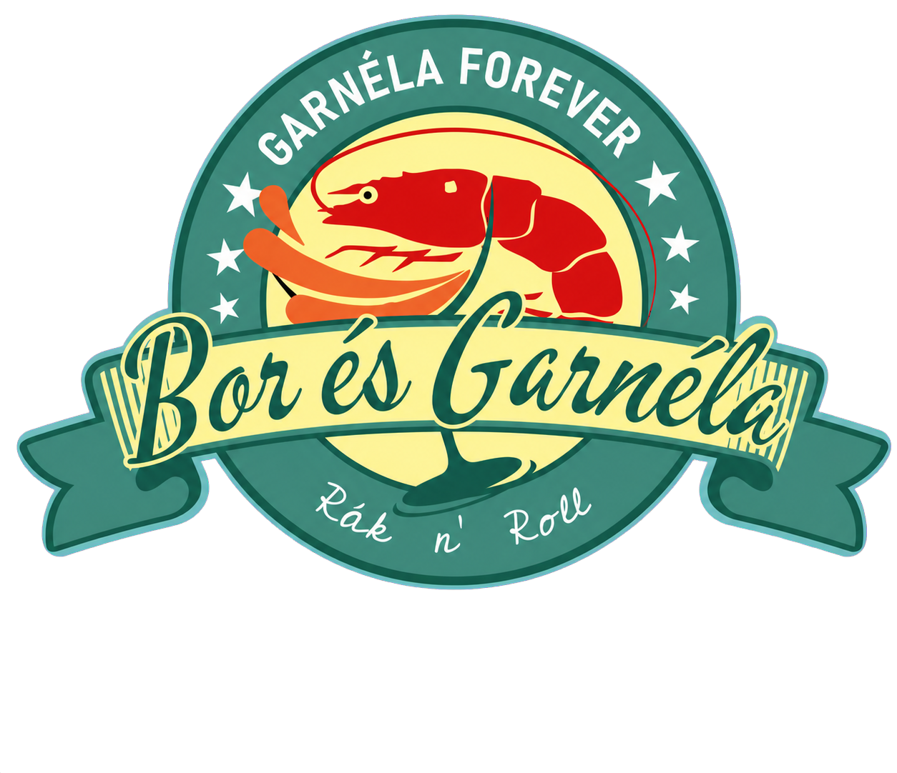

Frissen készül
Minden tányérunknál az ízek, a textúrák és a pillanat frissessége számít.

FoglalásKECSKEMÉT PIACCSARNOK · BUDAI U. 2.
Ha egy finom garnélára vágysz, térj be hozzánk! Friss ízek, jó borok és egy kis Rák ’n’ roll.
A PIAC SZÍVÉBEN
A Bor és Garnéla Rák ’n’ Roll egy laza, mégis gondosan megkomponált piaci bisztró. Konyhánkban a garnéla kapja a főszerepet, mellé pedig olyan borokat válogatunk, amelyekkel minden falat még izgalmasabb.
Ebédre, egy könnyed vacsorára vagy egy hosszúra nyúló esti beszélgetéshez is várunk a Piaccsarnokban.
Útvonaltervezés ↗A MI RITMUSUNK
A frissen készült fogások, a jókedvű társaság és a könnyed borok adják a Rák ’n’ roll hangulatát.
Minden tányérunknál az ízek, a textúrák és a pillanat frissessége számít.
Könnyed, étel mellé simuló borokkal tesszük teljessé az élményt.
Teraszos esték, jó zenék és az a fajta közvetlen hangulat, amihez szívesen visszatérsz.
„A garnéla azt mondta: ha már reklám, legyen stílusos!”
BOR ÉS GARNÉLA RÁK ’N’ ROLL
LÁTOGASS EL HOZZÁNK
A konyha zárás előtt 30 perccel fejezi be a rendelésfelvételt.